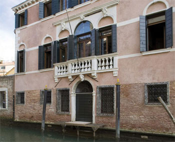

J'ai déjà évoqué la Fondation du Palazzetto Bru Zane lors d'une chronique consacrée au Grand Prix de Rome. A l'époque (2011) le projet était en pleine croissance mais, à présent, il est suffisamment développé pour qu'un premier bilan soit tenté. Il s'impose d'autant plus que ce n'est pas tous les jours qu'on peut se réjouir de voir des artistes français (mais aussi quelques sympathisants étrangers) consacrer leur temps et leur talent à la célébration active de leur patrimoine musical, en l'occurrence la période romantique, généreusement élargie aux années 1780-1920, soit, pour aller vite, de Grétry (1741-1813) et Méhul (1763-1817) à Roussel (1869-1937).
Le site de cette Fondation est tellement riche et complet que je doute que vous aurez la patience ou le loisir de l'explorer entièrement. Je vais donc faire quelques présentations qui vous ôteront définitivement l'excuse d'ignorer cette entreprise de salut public.
Du palazzetto Zane à la Fondation Bru Zane

Palazzetto Bru Zane
Le Palazzetto Zane a été construit, à la fin du 17ème siècle, dans le quartier de San Polo à Venise. Menacé de délabrement, il a été acquis et restauré, en 2006, afin d'accueillir un projet de mécénat lié à l'héritage de la Famille Bru. Voilà qui explique le nom de la Fondation qui s'y est développée, Bru Zane.
Le Palazzetto étant ouvert au public, vous le visiterez à l'occasion de votre prochaine escapade à Venise. Les concerts régulièrement programmés au casino Zane ou à la Scuola grande san Giovanni evangelista, situés à proximité, vous permettront de joindre l'utile à l'agréable (Calendrier complet, y compris les tournées à l'étranger).
La saga de la famille Bru a commencé avec les travaux de Camille Bru (1896-1958), médecin-chercheur français original (dans tous les sens du terme). Il a bâti sa fortune sur la découverte du pouvoir activateur de l'effervescence dans la médication en particulier gastrique. Le Normogastryl, adroitement servi par une campagne publicitaire d'avant-garde, a servi de rampe de lancement aux laboratoires UPSA d'Agen. Son fils unique, Jean Bru, médecin lui aussi, a repris le flambeau de l'entreprise à la mort prématurée de son père, excellant à déployer les activités du laboratoire familial à l'international. Décédé à son tour prématurément, en 1989, son épouse et collaboratrice, la Dr Nicole Bru-Magniez, a repris la direction des affaires avant d'en céder les parts au géant américian BMS, en 1994. A partir de cet instant elle s'est consacrée à sa Fondation en vue de concrétiser les projets de mécénats auxquels le couple rêvait.
Les projets à vocation humanitaire ou culturelle sont variés (Ecole élémentaire en Birmanie, école polytechnique à Pékin, refuge pour jeunes filles en difficultés à Agen, ...) mais celui qui nous intéresse ici concerne l'ouverture du centre de Musique romantique française au coeur du palazzetto restauré.
La musique française a connu quelques périodes fastes au cours de son histoire qui vous sont rappelées par ailleurs sur ce site. La plus sousestimée en tous cas celle qui nécessite l'exploration la plus complète est sans doute celle qui a duré 80 ans entre 1840 et 1920. Stylistiquement c'est le romantisme éventuellement tardif mêlé à l'impressionnisme.
Les publications
Cette chronique n'aurait pas existé sans preuves tangibles d'une activité artistique hors du commun. L'ensemble des oeuvres exhumées a de quoi impressionner tout esprit curieux. Les enregistrements édités sont soit des CD au format habituel soit des livres-cd richement documentés. La liste tenue à jour vaut un inventaire attentif, elle s'arrête ci-dessous avec l'année 2017. Vous trouverez souvent un extrait disponible à l'écoute pour chaque réalisation.
Opéras français (17 publications à ce jour mais c'est sans compter les coproductions avec des labels indépendants cités entre parenthèses). Il s'agit d'oeuvres rares ne figurant au répertoire d'aucune maison d'opéra. Commençons par les oeuvres d'auteurs non spécifiquement français mais reliées d'une façon ou d'une autre à l'univers parisien, en particulier au niveau de la langue du livret. Le dernier opéra de Johann Christian Bach (1735-1782), Amadis de Gaule (1779), a été créé à l'Académie Royale de Musique. L'oeuvre ne remporta aucun succès peinant à trouver sa place entre les gloires du moment, Gluck et Piccinni. Antonio Sacchini (1730-1786), débarqué tardivement à Paris eut plus de succès avec Renaud (1783), qui choisit clairement le parti piccinniste supporté par la Reine (Marie-Antoinette). Antonio Salieri (1750-1825) a plutôt épousé le camp gluckiste supporté par le Roi (Louis XVI) : Les Danaïdes (1784) ont même été annoncé lors de la création comme étant de Gluck, ce qui ne pouvait être, celui-ci sortant d'un AVC n'a fait que conseiller son élève. Salieri a démontré dans ce chef-d'oeuvre que les railleries de Mozart à son égard étaient pures méchancetés et l'interprétation de Christophe Rousset lui rend pleinement justice. La logique voudrait que la Fondation promeuve la période parisienne de l'oeuvre de Christoph Willibald Gluck (1714-1787) et on suppose que cela ne tardera pas (Il nous manque une bonne version intégrale d'Armide (1777)).
D'autres musiciens importés ont alimenté le répertoire de l'Hexagone et la Fondation s'est assurée la collaboration de labels indépendants : André-Modeste Grétry (1741-1813) dans quelques oeuvres légères (dans tous les sens du terme) La Caravane du Caire (1783) et Céphale et Procris (1773) de sont des coproductions avec Ricercar, situées loins derrière le chef-d'oeuvre dramatique qu'est Andromaque (1780). La Toison d'Or (1786) de Johann Christoph Vogel (Glossa)
d'inspiraion gluckiste regarde clairement vers le siècle suivant mais le compositeur est mort jeune, Thésée (1782) de François-Joseph Gossec (1734-1829) (Ricercar).
Charles-Simon Catel (1773-1830) démontre avec Sémiramis (1802, Glossa) et Les Bayadères (1810) qu'on a eu tort de négliger son oeuvre postrévolutionnaire, Uthal (1806) de son collègue Etienne Nicolas Méhul (1763-1817) ne convainc pas aussi bien.
Les grands noms de l'opéra romantique français sont également présents au travers de quelques oeuvres oubliées. C'est incontestablement Charles Gounod qui s'en tire avec les plus grands honneurs, affirmant ses prétentions au titre de meilleur mélodiste (français) de son temps. Gounod n'est présent au répertoire des maisons d'opéras que grâce à quelques oeuvres toujours les mêmes, Faust, Roméo et Juliette et dans une mesure déjà moindre Mireille mais les oeuvres proposées par la Fondation (Cinq-Mars (1877) et Le Tribut de Zamora (1881)) démontrent la frilosité de ces choix, espérons la suite. Edouard Lalo (1823-1892) et Jules Massenet (1842-1912) n'obtiennent que la mention bien (C'est subjectif mais j'assume) dans respectivement La Jacquerie (1892) et Le Mage (1891). Ma petite déception émane de Camille Saint-Saens (1835-1921), un compositeur que j'apprécie beaucoup par ailleurs (Il n'a pas écrit que "Le Carnaval des Animaux" !) : ni Proserpine (1887) ni Les Barbares (1901) ne renouvellent le miracle de Samson et Dalila (1877).
Les vraies surprises émanent de quelques musiciens moins connus qui font preuve d'une réelle efficacité mélodique et dramatique : Benjamin Godard (1849-1895) habituellement (injustement) réduit à sa célèbre Berceuse de Jocelyn rayonne dans Dante (1890) et Félicien David (1810-1876) en fait autant dans Herculanum (1859). D'autres belles surprises apparaissent au détour : La Mort d'Abel de Rodolphe Kreutzer (1766-1831) le violoniste dédicataire de la célèbre Sonate n°9 de Beethoven (qu'il ne joua jamais au motif qu'elle était inintelligible !). Jamais avare d'exagérations Berlioz qualifia cette oeuvre de géniale mais on imagine que d'autres publications pourraient suivre puisque Kreutzer a composé 40 opéras. Onslow Guise ou Les Etats de Blois . Victorin de Joncières (1839-1903) n'a connu que des déceptions que son oeuvre la plus appréciée Dimitri (1876) peine à effacer.
D'autres parutions isolées méritent votre attention honorant des compositeurs plus ou moins connus dans cet ordre : Gioachino Rossini (1792-1868) Guillaume Tell (1829), Luigi Cherubini (1760-1842) Lodoïska (1791).
Le Pré aux Clercs (1832) de Louis Ferdinand Hérold (1791-1833) fait bien son travail précurseur de l'opérette à venir lors du Second Empire.
Prix de Rome. Une chronique antérieure s'est déjà intéressée à l'histoire de cette Institution aujourd'hui éteinte. Six volumes sont parus à ce jour : Vol. 1 (Claude Debussy), Vol. 2 (Camille Saint-Saëns), Vol. 3 (Gustave Charpentier), Vol. 4 (Max d'Ollone), Vol. 5 (Paul Dukas), Vol. 6 (Charles Gounod)
Portraits. Quatre musiciens peu connus ont reçu cette attention, à ce jour : César Félicien David (1810-1878) (ode-symphonie Christophe Colomb et la Symphonie n°3), Théodore Gouvy (1819-1898), Théodore Dubois (1837-1924) et Marie Jaëll (1846-1925). La priorité accordée à ces musiciens n'est pas due hasard, la qualité des eouvres accompagnant cet hommage en témoigne.
Coproductions variées. La Fondation encourage les partenariats avec des labels indépendants mais en respectant l'esprit de défense du répertoire français négligé. les références sont trop nombreuses pour figurer ici dans le détail. c'est d'autant moins nécessaire que le lien fourni permet de piocher à son aise. Je me contente de pointer quelques enregistrements qui m'ont plu par leur originalité musicale.
Anton Reicha est à l'honneur dans deux parutions récentes tout à fait remarquables: un premier volume de pièces pour piano par Ivan Illic (Chandos) et un album de 3 CD de musique de chambre paru chez α.
Benjamin Godard est enfin reconnu à sa juste valeur qui n'est pas mince avec ses Sonates pour violon & piano, ses quatuors à cordes.
les enregistrements de mélodies les unes de Fernand de La Tombelle les autres (avec orchestre ou avec piano) de Camille Saint-Saëns.
Fernand de la Tombelle (Les 7 Paroles de notre Seigneur J-C), Oedipe à Colone oratorio de Théodore Gouvy (1819-1898), Paul Le Flem (1881-1984) Aucassin et Nicolette (1909), chantefable. Félicien David a été brièvement évoqué à l'occasion d'une chronique relative à l'histoire de l'opéra-comique. Parmi la dizaine d'oeuvres mentionnées, la cantate Le Désert, son oeuvre la plus connue (?)
Les cerises sur le gâteau
Le site de la Fondation possède sa propre radio online évidemment consacrée au répertoire visé du romantisme français : rien que des perles rares dans tous les domaines allant de la musique de chambre à celle pour grands ensembles. Si vous voulez écouter cette musique 24/24 h parfaitement affichée sans bavardages d'aucune sorte vous voilà servis (J'écoute, en ce moment l'ouverture d'Uthal d'Etienne-Nicolas Méhul (1763-1817); extrait :). Les distraits qui voudraient se rappeler une oeuvre entendue peuvent consulter consulter les archives de la programmation valables pendant 7 jours.
Un travail d'édition d'études relatives à des sujets divers mais pointus ou de rééditions d'opuscules anciens (Mémoires de Gounod, Berlioz ou Dubois, correspondance de Berlioz ou Saint-Saëns).
Une base de données en extension continue vous permet d'accéder à toutes sortes de renseignements utiles, historiques ou esthétiques, concernant les oeuvres programmées et leurs auteurs.
Un espace média vous propose les échos de conférences données au Palazzetto sur des thèmes variés.
Tous les projets exigent une part importante de recherche musicologique entreprise avec les centres les plus compétents. Les publications et les actes de colloques utiles sont accessibles en ligne.